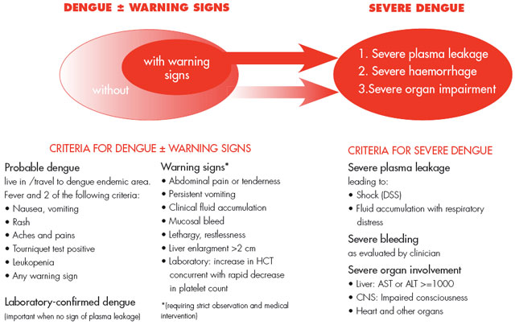

The OUCRU datasets¶
This repository contains the documentation of an aggregation of datasets collected from various prospective clinical studies which have been conducted by the Oxford University Clinical Research Unit (OUCRU) between 2009 and 2021. These studies have been conducted in healthcare facilities within the Hospital for Tropical Diseases (HTD) in Ho Chi Minh City, Vietnam.
{kind=link}
{kind=link}
OUCRU and HTDImperial College LondonImperial College LondonName |
Period |
Aim |
Patients |
|---|---|---|---|
df |
1999-2009 |
Describe clinical features of |
1719 |
md |
2001-2009 |
Describe clinical features of |
3044 |
dr |
2005-2008 |
Describe clinical features of |
1542 |
fl |
xxxx-xxxx |
||
06dx |
2009-2011 |
Effect of steroid in Dengue |
330 |
13dx |
2010-2014 |
Diagnostic accuracy of NS1 |
8108 |
32dx |
2013-2016 |
Intravascular volume assessment (CRI) |
75 |
42dx |
2017-2018 |
Clinical features of DSS in pregnant women? |
664 |
d001 |
2011 |
112 |
|
01nva |
2020-2021 |
Clinical features of Dengue patients (wearables) |
155 |
where:
DSSis Dengue Shock Syndrome
NSDis Non Severe Dengue
CRIis …
The table below includes the manuscripts that have been published along the years using the data collected in at least one of the previously described studies. The columns describe the dataset used (name), the title of the manuscript, the year in which it was published and a reference to the full manuscript for download as pdf.
Data |
Title |
Year |
Ref |
|---|---|---|---|
df |
Comparison of three fluid solutions for resucitation in DSS |
2005 |
|
df |
Clinical characteristics of dengue shock syndrome in vietnamese children |
2013 |
|
df |
A prognostic model for development of profound shock in DSS |
2015 |
|
md |
The value of daily platelet counts for predicting DSS |
2017 |
|
dr |
Assessment of microalbuminuria for early diagnosis and risk prediction |
2013 |
|
06dx |
Effects of short-course oral corticosteroid therapy in early dengue infection |
2012 |
|
06dx |
Corticosteroids for Dengue - Why don’t they work? |
2013 |
|
Clinical features of Dengue in a large vietnamese cohort |
2012 |
||
13dx |
Sensitivity and specificity of a novel classifier for the early diagnosis |
2015 |
|
13dx |
An evidence-based algorithm for early prognosis of severe dengue |
2017 |
|
32dx |
Microvascular and endothelial function for risk prediction in dengue |
2012 |
|
32dx |
Association of microvascular function and endothelial biomarkers … |
2016 |
|
32dx |
Cardio-haemodynamic assessment and venous lactate in severe dengue … |
2017 |
Note that some of the manuscripts published might have used a subset of the whole dataset after following their corresponding inclusion and exclusion criteria. These criteria are usually described within the manuscripts and it is important have it in mind when comparing Patient’s characteristics tables.
Overview¶
The data has been combined using DataBlend library and it has been checked for
both inconsistencies and outliers which have been either corrected or discarded. The
final dataset has been formatted in both stacked structure (for databases) and
tidy structure (for ML/AI) formats. Note that in tidy format each row represents
a unique patient/date combination. For more information about the corrections and
formats see the DataBlend documentation (link).
Note
Please report any further inconsistencies you might find!
Description of features¶
The list of features available in the aggregated dataset is included in the table below. Please note that some features might not be available across all datasets yet that information will be provided in the following section Presence of features in datasets.
The following table includes:
name: The name of the feature
dtype: The data type of the feature (e.g. boolean)
unit: The unit of the feature (if applicable)
code: The code of the feature (if applicable)
ctype: The class type of the feature (e.g. vital sign)
description: Brief description of the feature
categories: The list of allowed categories
nunique: The number of unique values found in the data
unique: The unique values found in the data
corrections: The corrections applied to such feature
ranges: Useful reference ranges [pending…]
warning: Comment and/or question related to the feature (highlighted in yellow)
Note
Remember that in the table below you can:
reorderthe rows by any column.
searchusing the searchbox to filter rows. This box allows you to search by the name of the feature (e.g. bleeding will show all features including bleeding) but in addition it will return any feature that contains the query word in its description. For instance, you can use it to find skin, lung, chest, blood/bleeding related features.
exploremore information through the dropdown button (+).
exportthe table to any of the available formats (disabled for now).
Presence of features in datasets¶
As we have mentioned below, not all the features are available accross
the studies. To provide more specific information, the table below displays
the number of rows containing a value different from None for each feature
an the corresponding dataset. In addition, the extra column n_sets has been
included to indicate the total number of datasets in which the feature is
present.
Note
The table has been automatically generated from
the combined dataset in tidy structure.
Detailed profile of datasets¶
For more information on each of the datasets, please visit the links below.
Warning
The following links do not work because files are too long to be uploaded and hosted in the standard git repository. To solve this issue the package git-large-files could be used.
md-dataprep
md-pandas-profile
dr-pandas-profile
42dx-pandas-profile
01nva-pandas-profile
Note that profiles are at the moment outdated and where computed with old versions of the dataset. New pofiles will be available shortly.
Name |
|
|
|---|---|---|
df |
Link | Link |
md |
Link | Link |
dr |
Link | Link |
06dx |
Link | Link |
13dx |
Link | Link |
32dx |
Link | Link |
42dx |
Link | Link |
d001 |
Link | Link |
01nva |
Link | Link |
List of datasets¶
This section includes a summary of the details for each individual study/dataset.
The df dataset¶
Note
No published manuscripts.
Title:
The trial was a single-center, randomized, double-blind comparison of an isotonic
crystalloid solution (Ringer’s lactate) and two isotonic colloid solutions (6% dextran 70
[dextran] and 6% hydroxyethyl starch 200/0.5 [starch]) for emergency resuscitation of
children with dengue shock syndrome DSS. The children were stratified according to pulse
pressure at admission, a marker of the severity of the vascular leak. No children in the group
with severe shock received a crystalloid because of concerns about the potential development of
critical fluid overload without access to advanced respiratory support. The study took place
in the pediatric intensive care unit at the Hospital for Tropical Diseases in Ho Chi Minh City,
Vietnam. The ethics and science committee of the hospital approved the protocol.
The md dataset¶
Note
…
Title: Inpatient-based study examining prognostic factors during the febrile phase
A prospective observational study of children hospitalized with suspected dengue at
the HTD in Ho Chi Minh City, Vietnam, was conducted between 2001 and 2009. The cohort included
any child aged between 5 and 15 years admitted to the paediatric dengue ward at HTD with
clinically suspected dengue, whose parent/guardian gave written informed consent for them to
be enrolled in the study following detailed explanation by a trained study doctor. Consecutive
suspected dengue cases identified during the morning ward round were approached by study
staff as potential participants; commencing on Monday morning the process continued until
up to 10 suspected dengue cases had been enrolled for that week. Of note, the paediatric dengue
ward is responsible for managing children with uncomplicated illness only, and HTD
policy dictates that any child who develops DSS or about whom there is concern (typically
development of warning signs necessitating monitoring more frequently than 4–6 hourly) is
transferred to the Paediatric Intensive Care Unit (PICU). During the study period all children
admitted to PICU with DSS were recruited into a concurrent pediatric cohort
The dr dataset¶
Note
…
Title: Acute dengue in paediatric populations
We conducted a prospective descriptive study of febrile children, aged 5–15 years,
attending two primary health care clinics in Ho Chi Minh City, Vietnam. Clinic A is a
single-handed practice run by a senior paediatrician, while Clinic B is the walk-in
paediatric clinic at District 8 Hospital. This study forms one part of a large community
study on dengue, the clinical aspects of which have been described previously, but briefly
all children presenting with fever and clinically suspected dengue to either clinic were
eligible for enrolment following written informed consent. Recruitment was targeted towards
patients presenting during the early febrile period, ideally within the first 72 hours from
fever onset, although patients presenting up to 96 hours from fever onset could be enrolled.
Patients were seen daily until afebrile for two consecutive days, with detailed clinical
information recorded in a standard format and a 1 ml EDTA blood sample obtained for clinical
(haematocrit estimation and platelet count) and diagnostic purposes, together with a random
urine sample. Clinic physicians were responsible for all management decisions; if hospitalization
was considered necessary the children were admitted to HTD and the daily assessments continued,
following the same protocol as the outpatient subjects. Patients were invited to attend for
review 2–4 weeks from illness onset.
Illness day 1 was defined as the day of reported fever onset. Defervescence day was defined as the first day with no history of fever since the previous day’s visit and with a measured temperature 37.5 C in the clinic. The following outcomes were summarised from the daily assessments: the platelet nadir between days 3–8 of illness; the presence or absence of skin and/or mucosal bleeding; the percentage hemoconcentration, defined as the percentage increase in haematocrit comparing the maximum value recorded between days 3–8 of illness, to a baseline value taken as the lowest result obtained on or before illness day 2 or after day 14, or a local population value matched for age and sex if no individual baseline was available.
The 06dx dataset¶
Note
Patients enrolled in the intervention arm of the randomised control trial (n=150) were not admitted to hospital and managed in the community (outpatients).
Title: Randomised control trial comparing use of steroids versus placebo in acute dengue
We performed a randomized, placebo-controlled, partially blinded trial of early
corticosteroid therapy in Vietnamese children and young adults with suspected dengue virus
infection. The study took place on designated infectious diseases wards at the Hospital for
Tropical Diseases of Ho Chi Minh City, with approval from the Ethical Committee of the
Ministry of Health of Vietnam and the Oxford Tropical Research Ethics Committee.
The 13dx dataset¶
Note
The majority of patients in 13dx were outpatients since it was an outpatient-based study.
Title: Outpatient-based study examining prognostic factors during the febrile phase
Recruitment occurred in the public sector outpatient departments of Children’s Hospital No. 1
(HCMC), Children’s Hospital No. 2 (HCMC), The Hospital for Tropical Diseases (HCMC),
Tien Giang Provincial Hospital, Dong Nai Children’s Hospital, Binh Duong Provincial Hospital and Long
An Provincial Hospital. These outpatient departments function as primary care
providers to their local communities. A patient presenting to one of the study sites was eligible
for enrolment if they met the following inclusion criteria—a) fever at presentation (or history
of fever) and less than 72 hours of symptom history, b) in the attending physicians opinion
dengue was a possible diagnosis, c) 1–15 years of age inclusive, d) accompanying family member or
guardian had a mobile phone and e) written informed consent for the child to participate was provided
by the parent/guardian. Patients were excluded if- a) the attending physician
believed they were unlikely to be able to attend follow-up or b) the attending physician believed
another (non-dengue) diagnosis was more likely. Patient enrolment occurred consecutively
during normal clinical hours on weekdays without restriction. All patients were enrolled into
the study before the attending physician received the results of any routine laboratory tests.
The 32dx dataset¶
Note
There are 2 studies included; In Hanoi, 22dx (76 IDAMs patients) were recruited possibly corresponding to outpatients. In Ho Chi Minh 103 patients were recruited where codes from 32dx-03-[1000-1084] are PICU and 32dx-03-[1500-1519] are AICU. Do numbers match?
Warning
In Hanoi I co-enrolled 22dx (IDAMs patients – so you’ll see in the publications in Cid/JID includes OPD). I think you just have the inpatient so 32dx-20-700 to 775 (32dx-20-001 to 090 were co-enrolled IDAMs so don’t think you have these) HCMC data 32dx-03-1000-1084 is pediatric ICU and 32dx-03-1500-1519 are AICU. So total should be 74 for Hanoi (adult inpatients) (I think 3 or 4 patients withdrew consent so total may be 70) and 103 for HCMC (adult and Paed ICU).
Title:
We performed a STROBE-compliant prospective observational study at the National Hospital for Tropical Diseases
(NHTD), Hanoi, Vietnam, between June 2013 and February 2014. Ethical approval was obtained from the Oxford Tropical
Research Ethics Committee and the Ethics Review Committee at NHTD, and written informed consent was obtained from
all participants or the parents/guardians of children. Adults and children >5 years of age with a clinical diagnosis
of possible dengue were eligible for enrollment into either of 2 study arms. In the outpatient arm, participants
presenting within 72 hours of fever onset could be enrolled if no alternative cause for the fever was identified.
For the inpatient arm, any patient admitted to NHTD with suspected dengue with warning signs or severe dengue was
eligible. All patients were reviewed daily until fully recovered and afebrile, or for up to 6 days after enrollment.
Standardized clinical information was recorded daily, including findings of detailed clinical examination and
hemodynamic assessment. A complete blood cell count was performed daily, with additional samples obtained
for a biochemical profile and dengue diagnostics at enrollment, at defervescence, and at a follow-up visit 10–14
days after illness onset. Any outpatient requiring admission continued to be followed up daily in hospital, with
the indication for admission documented, and all management interventions were recorded. Additional investigations,
including ultrasonography and/or chest radiology, were performed if clinically indicated.
The 42dx dataset¶
Note
No published manuscripts.
Title: Study of acute dengue in pregnancy during the febrile phase
The 01nva dataset¶
Note
No published manuscripts.
Currently recruiting patients.
FLUIDSrelated information has not been extracted yet.TREATMENTrelated information has not been extracted yet.
Title:
Useful definitions¶
Dengue overview¶
In general, clinicians consider Dengue as very much a disease which follows
certain well defined phases which are described in the Figure below. Firstly, in
the febrile phase (days 1-5) the patients are unwell with fever, however, no
life threatening clinical manifestations happen. In the critical phase (days
4-6+) the patients are in danger of being critically unwell e.g. they develop
shock, bleed a lot, or need therapy (fluids, ventilation, …). Finally, the
recovery phase (after day 6+) which happens after the critical phase.
{kind=link}
The two main questions that people have typically felt are important for clinical management are:
Classification: When I see someone presenting with a fever, is this dengue, or another disease (e.g. a bacterial infection)? Note that dengue does not require antibiotics but bacterial infections (including sepsis) do.
Stratification: For someone with dengue, what is the risk of them developing severe dengue (shock, bleeding, plasma leakage)? The pattern of illness and how you manage the patient also matters (e.g. do you discharge them, or admit them to hospital). Therefore, when in the illness time-course can I reliably predict this? What features do I need?
The majority of the studies (MD, DR, D001, 13DX, 42DX and 06DX)
recruit patients when they are generally in the febrile phase (but not always). Therefore,
the typical dengue disease progression following the three phases explained before applies.
However, there are other studies (FL, 32DX and some of 01NVA) include patients
already in shock or with severe dengue. These patients are recruited from Intensive Care
Units and are followed up. This is very important, specially if you want to have a predictor
for dengue, then you should use the first dataset of patients to ensure that they have not
developed shock already. In addition, note that studies are comparable to a certain extent,
but do differ in how they recruit their patients. For instance, 13DX recruits patients
early in illness when presenting to their local health centre, MD recruits after admission,
and DF recruits after they enter intensive care. Therefore, the day_of_illness is
key to aligning all the studies for comparison.
Also, be aware that the data is imperfect, with a lot of missingness – and the time element of the observations is crucial (febrile-critical-recovery model of disease). For instance, examination findings are probably more subjective and open to interpretation compared with laboratory values, and the measurement of outcomes likewise can vary between studies.
Dengue outcomes¶
Outcomes in dengue are classified according to the 2009 WHO criteria which is followed by most of the studies. For a patient with dengue (see Dengue interpretation), the final classifications includes: (i) dengue without warning signs (uncomplicated disease), (ii) dengue with warning signs (have some clinical features which make them at risk of severe dengue) and (iii) severe dengue (one or more of DSS, fluid accumulation, severe bleeding or severe organ impairment). A description of these three classes is presented in the Figure below.
{kind=link}
As the dataset is made up from different studies done in different ways, you might find
that one or more of these outcomes are missing. However DSS or shock should always
be there – it’s by far the least subjective and well-recorded outcome.
To provide additional help, the following table shows features that can be combined to
create interpretable outcomes (e.g. severe_dengue_leakage) that can be used to identify
severe dengue, denoted as sd. For more information, see the list os possible features
for further consideration.
Outcome |
Features |
Notes |
|---|---|---|
|
|
|
|
ascitesoverloadoedema_pulmonaryrespiratory_distressventilationdiuretics |
|
|
bleeding_gi *bleeding_urine *bleeding_severe |
|
|
cns_abnormal *liver_abnormal *kidney_abnormal * |
where
* see section Compound features
ascites: fluid accumulation - severe dengue (?)
oedema: fluid accumulation, so a spectrum - probably just a warning sign
oedema_pulmonary: fluid accumulation in lungs, respiratory distress, severe dengue
effusion: fluid accumulation, so a spectrum - severe fluid in chest
pleural_effusion: fluid accumulation, so a spectrum - some might indicate severe dengue
bleeding: Some bleeding can be normal and part of the warning signs.
bleeding_gi: gastrointestinal bleeding is important - severe dengue
bleeding_urine: Severe dengue
bleeding_severity: high severity indicates severe dengue
bleeding_gum: warning sign and therefore does not fulfill the outcome definition.
bleeding_mucosal: warning sign and therefore does not fulfill the outcome definition.
inotrope: drugs used to increase blood pressure in shock - associated with severe dengue
respiratory_distress: Severe dengue
meche: indication of respiratory distress - severe dengue
oxygen_mask: indication of respiratory distress - severe dengue
ventilation: indication of respiratory distress
jaundice: might indicates liver impairment - severe dengue
cns_abnormal: central nervous system abnormal - severe dengueany
shockrelated feature is associated with severe dengue.any
unconsciousnessindicates cns_abnormal.any
respiratory_distressis associated with severe dengue.
Note that unconsciousness is always associated with abnormalities in the
central neural system. Also, any signs of respiratory_distress such as the
use of ventilation support, oxygen masks, presence of fluids in the lungs, …
are associated with severe dengue.
In addition, there is a definition that was established in 1997 and therefore affect a few of the previously described studies. This definition describes two categories: dengue severe shock (DSS) and dengue haemorragic fever (DHF). The latter has four different levels (1-4) from which 3 and 4 can be considered equivalent to severe dengue. This information is collected in DR/MD within the final diagnosis variable but has not yet been extracted.
Dengue interpretation¶
Dengue fever is a mosquito-borne tropical disease caused by the dengue virus. Symptoms typically begin three to fourteen days after infection. These may include a high fever, headache, vomiting, muscle and joint pains, and a characteristic skin rash. Recovery generally takes two to seven days. In a small proportion of cases, the disease develops into severe dengue, also known as dengue hemorrhagic fever, resulting in bleeding, low levels of blood platelets and blood plasma leakage, or into dengue shock syndrome, where dangerously low blood pressure occurs.
The final dengue diagnosis can be determined according to various diagnostic criteria which might differ between the studies. Such criteria in general includes one of the following:
positive
NS1point of care lateral flow assaypositive reverse transcriptase polymerase chain reaction (RT-
PCR)positive dengue IgM through acute serology
seroconversionof either single or paired IgM or IgG samples
The overall final dengue diagnosis or dengue_interpretation has been implemented (link).
oucru_dengue_interpretation_feature(tidy,
pcr=True, ns1=True, igm=True, serology=True,
single_igm_igg=True, paired_igm_igg=True,
default=False, verbose=10):
Serology interpretation¶
Serological tests are diagnostic methods that are used to identify antibodies and antigens in a patient’s
sample. Serological tests may be performed to diagnose infections and autoimmune illnesses, to check if a
person has immunity to certain diseases, and in many other situations, such as determining an individual’s
blood type. Serological tests may also be used in forensic serology to investigate crime scene evidence.
Several methods can be used to detect antibodies and antigens, including ELISA, agglutination,
precipitation, complement-fixation, and fluorescent antibodies and more recently chemiluminescence.
The outcomes reported int the datasets have the following values:
Not Dengue: Patient did/does not suffer dengue.
Primary: Patient did not have dengue previously (first time).
Secondary: Patient had dengue previously.
Inconclusive: Results from the ELISA test are not clear.
None: Information not available (test not conducted).
First sample |
Second sample |
Serology |
||||
|---|---|---|---|---|---|---|
igm |
igg |
igm |
igg |
single |
paired |
notes |
‐ |
‐ |
‐ |
‐ |
Inconclusive |
Not Dengue |
|
‐ |
‐ |
‐ |
+ |
Inconclusive |
Primary |
|
‐ |
‐ |
+ |
‐ |
Inconclusive |
Primary |
|
‐ |
‐ |
+ |
+ |
Inconclusive |
Primary |
|
‐ |
+ |
‐ |
‐ |
Inconclusive |
Inconclusive |
|
‐ |
+ |
‐ |
+ |
Inconclusive |
Secondary* |
|
‐ |
+ |
+ |
‐ |
Inconclusive |
Inconclusive |
|
‐ |
+ |
+ |
+ |
Inconclusive |
Secondary* |
|
+ |
‐ |
‐ |
‐ |
Primary |
Inconclusive |
|
+ |
‐ |
‐ |
+ |
Primary |
Secondary* |
|
+ |
‐ |
+ |
‐ |
Primary |
Inconclusive |
|
+ |
‐ |
+ |
+ |
Primary |
Secondary* |
|
+ |
+ |
‐ |
‐ |
Secondary |
Inconclusive |
|
+ |
+ |
‐ |
+ |
Secondary |
Secondary* |
|
+ |
+ |
+ |
‐ |
Secondary |
Inconclusive |
|
+ |
+ |
+ |
+ |
Secondary |
Secondary* |
|
where
* indicates significant increase in igg
1indicates inconclusive because igg should be + by now
2indicates it is odd and maybe hovering around the threshold
3keep it as single outcome
The overall serology diagnosis or serology_interpretation has been implemented (link).
oucru_serology_interpretation_feature(tidy,
serology_single=True, serology_paired=True,
serology_interpretation=True,
inconsistencies='coerce',
verbose=0):
Single IgM-IgG¶
Todo
Explain
Paired IgM-IgG¶
Todo
Explain
NS1 interpretation¶
The NS1 antigen test (nonstructural protein 1) is a test for dengue through enzyme-linked
immunosorbent assay. NS1 is present in the serum of infected persons directly at the onset of
clinical symptoms in primary dengue infection and produces a strong humoral response. It is
detectable before the appearance of IgM antibodies (usually 5 or more days later). Additionally,
NS1 assay is useful for differential diagnostics in regards to flaviviruses.
There are various ns1 related features such as ns1_interpretation.
Equivocal: Inconclusive.
Positive: Positive ns1 test.
Negative: Negative ns1 test.
NA: Not available.
PCR interpretation¶
Polymerase chain reaction (PCR) is a method widely used to rapidly make millions to billions
of copies (complete copies or partial copies) of a specific DNA sample, allowing scientists to take
a very small sample of DNA and amplify it (or a part of it) to a large enough amount to study
in detail.
Dengue infections are caused by four closely related viruses named DENV-1, DENV-2, DENV-3, and DENV-4. These four viruses are called serotypes because each has different interactions with the antibodies in human blood serum. The four dengue viruses are similar — they share approximately 65% of their genomes — but even within a single serotype, there is some genetic variation. Despite these variations, infection with each of the dengue serotypes results in the same disease and range of clinical symptoms. All four dengue serotypes circulate together in tropical and subtropical regions around the world with all serotypes being present in Southeast Asia.
After recovering from an infection with one dengue serotype, a person has immunity against that particular serotype. After that short period, a person can be infected with any of the remaining three dengue serotypes. Researchers have noticed that subsequent infections can put individuals at a greater risk for severe dengue illnesses than those who have not been previously infected.
pcr_dengue_serotype
pcr_dengue_load
pcr_dengue_reaction
pcr_dengue_interpretation
Compound features¶
The table below presents some terminology that has been used on the different trials but refer to the same symptom; hence, they are equivalent. Some of this terminology might be merged on future releases of the dataset.
Term |
Other synonyms |
|
|---|---|---|
|
|
?? |
|
|
?? |
|
|
?? |
The features collected between the studies might vary. In order to combine features that might be similar from the clinical point of view, we have included below a table with features that could be merge into the same class.
Feature |
Individual elements |
Note |
|---|---|---|
|
Any bleeding |
|
|
bleeding_gihematemesismelaena |
|
|
bleeding_noseepistaxispacking_nose |
|
|
bleeding_skinpetechiaeecchymosisbruising |
|
|
bleeding_urinehematuria |
|
|
bleeding_urine |
|
|
cns_abnormalmeningismconfusionagitationrestlessnessGCSneurology_abnormal |
|
|
||
|
Below is an example on how they could be merge together.
# Combine features (I)
data.bleeding_gi = \
data.bleeding_gi | \
data.hematemesis | \
data.melaena
# Combine features (II)
data.bleeding_gi = \
data[['bleeding_gi',
'hematemesis',
'melaena']].any()